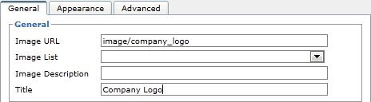

1.10.2. Node variants
Docmenta allows you to create several variants of a node (e.g. an image) and address all variants by the same inclusion link. During the export process, the filtering mechanism determines which of the variants is actually included in the publication. To achieve this, you have to assign alias names to the node variants that follow the format:
linkname!variantname
For example, consider the situation that you have two customers A and B and you have to deliver customized versions of a publication for both customers. One of the customizations could be the company logo. You can easily solve this by uploading both company logos with following alias names:
company_logo!A
company_logo!B
company_logo!B
e.g. the filenames could be company_logo!A.jpg and company_logo!B.jpg. In this example, the linkname part of the alias name is company_logo, whereas the variantname part is A or B, respectively. You can now insert the company logo in your content by using the URL image/company_logo (see Section 1.3.4, “Images” on how to insert images):

Figure 1.10.9. URL for including image variants
The selection of the logo for each publication is achieved by assigning applicability expressions to both images. Therefore, create an applicability flag for each customer, e.g. with names "custA" and "custB":
Figure 1.10.10. Applicability flags
The next step is to assign applicability expressions to the image variants. This way, the non-applicable image will be filtered out during export. In our example, assign the applicability expression "custA" to the image with alias name company_logo!A and the applicability expression "custB" to the image with alias name company_logo!B, as shown in the screenshot below:
Figure 1.10.11. Image variants with assigned applicability
To be able to test the logo selection, we create two publication configurations, one for customer A with filter setting "custA" and one for customer B with filter setting custB, as shown in following screenshot:
Figure 1.10.12. Publication configurations with filter settings
You can now test the correct selection of the logo, by previewing the content and switching between the two publication configurations. To do this select the desired publication configuration in the toolbar of the content workspace:
Figure 1.10.13. Selecting the publication configuration for preview
When you preview the content which includes the image with the URL image/company_logo with the publication configuration for customer A, then the image company_logo!A should be displayed. When you view the same content with publication configuration for customer B, then the image with alias name company_logo!B should be displayed. If the correct image is not displayed, then try clicking the refresh button.
Note that if you choose a filter setting where the applicability expression of both images evaluates to true, then the logo company_logo!A is actually selected. This is because in case of multiple applicable variants, the first applicable node according to the alphabetical order of the alias names is selected.
Hint:
The variant selection also works for inline inclusions (see chapter Section 1.11.2, “Inline inclusions”). For example, you can create two nodes with alias names customer_name!A and customer_name!B:
Figure 1.10.14. Using node variants for title inclusion
You can then use the title inclusion [#customer_name] to insert the customer name at any location in your content. Which of both customer names is actually inserted depends on the publication configuration's filter setting that is selected for preview/export.